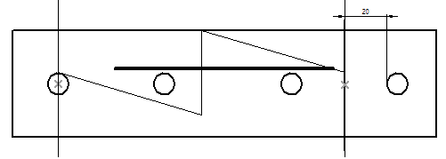
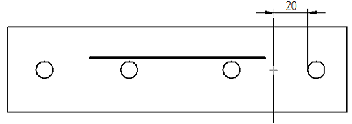
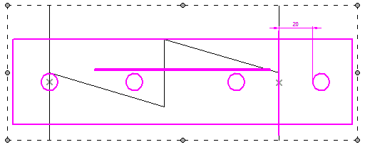
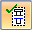
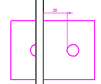
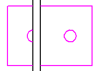

Connect a break line at a distance
In a broken view, you can constrain a break line so that it remains at a specific distance from geometry, for example, from the edge of a hole.

-
Right-click the drawing view with the break line and choose the Draw In View command.
-
In the Draw In View environment, do the following:
-
On the Layers tab, create a new layer and rename it to something useful, such as At Distance.
-
Double-click the newly created layer name to make it the active layer.
-
Use the Line command to draw a line that you can use for placing a dimension.
-
Use the Smart Dimension command to add a dimension that fixes the line at the required distance from the edge of the hole.

-
On the ribbon, click Close Draw In View.
-
-
Click+drag the break line onto the line you drew to create a connect relationship between the break line and the dimensioned line.

-
On the Drawing View Selection command bar, click the Show Broken View button

to break the view again.
-
On the Layers tab, in the Drawing Views collector, right-click the layer name you created and choose the Hide command.
The line and dimension are hidden.

How do I
Create a broken-out section viewModify a broken-out section view
Create a broken view
Break an isometric view with a break axis
Display break lines and cropped edges in a broken view
Modify break lines in a broken view
Copy break lines between drawing views
Remove inherited break lines
Learn more
Broken viewsLook up more details
Broken-Out commandBroken View command
Broken View command bar
Inherit Break Lines command
Remove Break Line Inheritance command